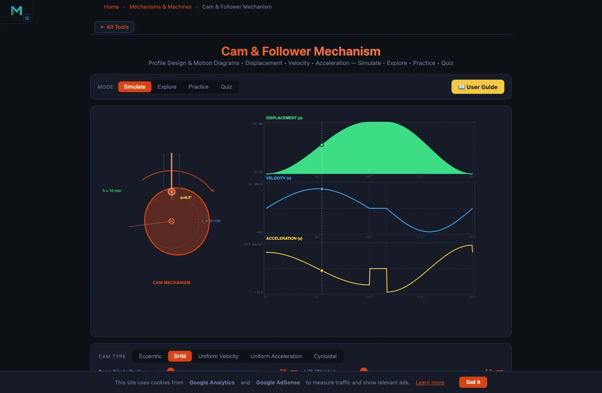
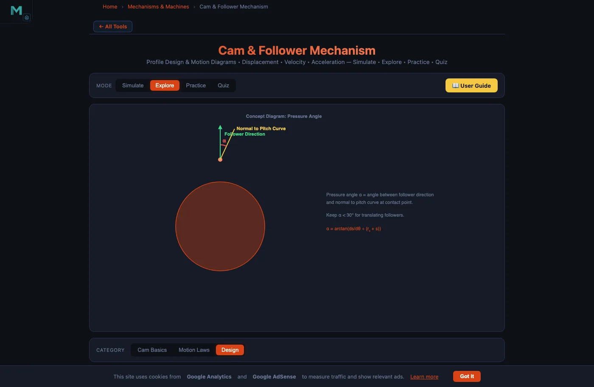

Cam and Follower Mechanism Design & Engineering Guide

- Cam-follower design centres on the pressure angle, tanα = (ds/dθ) / (r₀ + s), which must stay below 30° for translating followers and 35° for oscillating followers; increase the base circle radius r₀ or reduce the lift h if exceeded.
- Prevent undercutting by keeping the pitch-curve radius of curvature above the roller radius (roller rᵣ ≤ 0.8 × minimum ρ₋ₐₒ₋ₐ), and select a motion law to suit speed: SHM below ~600 rpm, cycloidal for high speed because it has zero jerk at every transition.
A cam-and-follower pair converts the uniform rotation of a shaft into precisely programmed reciprocating or oscillating motion. Engine valves, textile looms, packaging machines, and printing presses all rely on cams whose profiles must satisfy conflicting demands: compact size, low contact stress, no follower jamming, and quiet operation at hundreds or thousands of revolutions per minute. Poor design choices — an undersized base circle, the wrong follower type, or a motion law with discontinuous acceleration — produce excessive side forces, accelerated wear, vibration, and noise. This guide walks through every design decision in order, with the mathematics behind each constraint and a full worked example using the Cam & Follower Simulator.
Cam Geometry and Classification
The most common cam in industrial machinery is the disc cam (plate cam): a flat disc rotating about a fixed shaft, its non-circular profile pushing the follower up and down. Disc cams are manufactured on CNC milling machines and can achieve profile tolerances of ±0.01 mm.
Three other types serve specialist needs. The cylindrical cam machines a groove around the surface of a cylinder — it provides positive drive in both directions without a return spring, useful in transfer mechanisms. The wedge cam translates linearly rather than rotating and appears in tool-clamping fixtures. The conjugate cam uses two profiled discs driving a dual-roller follower; because one profile pushes while the other restrains, no return spring is needed and backlash is eliminated — critical in high-speed indexing tables.
Follower Type Selection
The follower is the mating element that rides the cam surface. There are four main tip geometries, each with distinct trade-offs.
Knife-edge followers trace any profile exactly — the pitch curve and cam profile are identical — but the point contact produces extreme wear and they are only practical in light-load instruments. Roller followers replace sliding with rolling contact, dramatically reducing friction; they are the standard choice for general industrial cams. A useful rule of thumb: keep the roller radius at most one-third of the base circle radius to leave an adequate margin against undercutting. Flat-face followers distribute load over a wide contact surface, reducing Hertz stress; they are preferred in high-speed automotive valvetrains, but the cam profile must be entirely convex — concave sections are forbidden. Spherical (mushroom) followers sit between roller and flat-face: the curved face tolerates slight shaft misalignment while keeping Hertz stress moderate.
Base Circle, Pitch Curve, and Trace Point
Three geometric constructions define a cam:
- Base circle (radius \(r_0\)): the smallest circle centred on the cam shaft tangent to the cam profile. The follower rests on this circle during dwell phases at its lowest position.
- Pitch curve: the locus of the follower’s trace point (roller centre for a roller follower, tip for a knife-edge follower) as the cam rotates. Its radius at cam angle \(\theta\) is \(r_0 + s(\theta)\), where \(s\) is the follower displacement.
- Prime circle: for a roller follower, the circle of radius \(r_0 + r_r\) where \(r_r\) is the roller radius. The actual cam profile is the pitch curve offset inward by \(r_r\).
The maximum pitch-curve radius equals \(r_0 + h\) where \(h\) is the total follower lift. A compact cam (small \(r_0\)) minimises package size but tightens the pitch-curve curvature, raising both the pressure angle and the undercutting risk.
Pressure Angle — the Fundamental Design Constraint
The pressure angle \(\alpha\) is the angle between the follower’s axis of motion and the common normal to the cam profile at the contact point. It is the single most important cam design parameter because it determines the side force on the follower stem.
\[\tan\alpha = \frac{\mathrm{d}s/\mathrm{d}\theta}{r_0 + s(\theta)}\]
The numerator \(\mathrm{d}s/\mathrm{d}\theta\) is the follower velocity per radian of cam rotation — the slope of the displacement–angle curve. A steep rise (large lift \(h\) over a short cam angle \(\beta\)) produces a large numerator and therefore a large pressure angle. Increasing \(r_0\) (the denominator) is the most direct way to reduce \(\alpha\).
Design limits: keep \(\alpha \leq 30°\) for translating followers and \(\alpha \leq 35°\) for oscillating followers. A side-force ratio of \(\tan 30° \approx 0.577\) means that for every 1 N of useful push force the guide absorbs 0.58 N sideways — above 30°, jamming and guide wear accelerate rapidly.

Undercutting — When the Cam Profile Inverts
Undercutting is a catastrophic manufacturing defect: the theoretically computed cam profile crosses itself, creating a cusp that cannot be machined or that causes the follower to lose contact. It occurs when the radius of curvature of the pitch curve \(\rho_\text{pitch}\) is smaller than the roller radius \(r_r\).
\[\rho_\text{pitch} < r_r \;\Rightarrow\; \text{undercutting}\]
The curvature of the pitch curve at angle \(\theta\) is:
\[\rho_\text{pitch} = \frac{\bigl[(r_0+s)^2 + (s')^2\bigr]^{3/2}}{(r_0+s)^2 + 2(s')^2 - (r_0+s)\,s''}\]
where \(s' = \mathrm{d}s/\mathrm{d}\theta\) and \(s'' = \mathrm{d}^2s/\mathrm{d}\theta^2\). The denominator falls when \(s''\) is large and positive — at peak upward acceleration, exactly where undercutting is most likely. A conservative design rule is \(r_r \leq 0.8 \times \min_\theta \rho_\text{pitch}\).
The four levers to pull when undercutting is detected: (1) increase \(r_0\) to raise the curvature radius across the entire profile; (2) reduce \(r_r\) to widen the margin directly (but smaller rollers have lower load ratings); (3) reduce lift \(h\) to decrease \(s'\) and \(s''\) proportionally; (4) increase rise angle \(\beta\) to spread the lift over more cam rotation.
Choosing the Motion Law
The motion law (displacement programme) determines how the follower travels from low dwell to high dwell during the rise angle \(\beta\). Four laws are in common use. Uniform velocity produces constant follower speed mid-stroke but theoretically infinite acceleration at each end — only usable for very slow cams. Uniform acceleration (parabolic motion) halves the stroke with constant upward acceleration and the other half with constant downward deceleration; the velocity peak is \(2h\omega/\beta\) and the acceleration is \(4h\omega^2/\beta^2\), but jerk is still discontinuous at the transition. SHM (cosine law) gives smooth sinusoidal acceleration everywhere except the dwell transitions; it is the standard choice for general-purpose cams below about 600 rpm. Cycloidal motion has sinusoidal acceleration and zero velocity and zero acceleration at both transition points — no jerk discontinuity at all — making it the correct choice for high-speed precision machinery.
Although the cycloidal law’s peak acceleration is higher than SHM by a factor of \(4/\pi \approx 1.27\), the complete absence of jerk discontinuities eliminates the impact forces responsible for noise, follower bounce, and fatigue failure.
SHM Worked Example — Engine Valve Cam
Consider the engine-valve cam preset available in the simulator: SHM law, roller follower, \(h = 10\text{ mm}\), \(r_0 = 25\text{ mm}\), rise angle \(\beta = 120° = 2\pi/3\text{ rad}\), speed \(n = 60\text{ rpm}\), so \(\omega = 2\pi\text{ rad/s}\).
Peak velocity:
\[v_\text{max} = \frac{\pi h\omega}{2\beta} = \frac{\pi \times 10 \times 2\pi}{2 \times (2\pi/3)} = \frac{10\pi^2}{4\pi/3} = 7.5\pi \approx 23.6\text{ mm/s}\]
Peak acceleration:
\[a_\text{max} = \frac{\pi^2 h\omega^2}{2\beta^2} = \frac{\pi^2 \times 10 \times 4\pi^2}{2 \times (4\pi^2/9)} = 45\pi^2 \approx 444\text{ mm/s}^2\]
Maximum pressure angle occurs near mid-rise where \(s \approx h/2 = 5\text{ mm}\):
\[\left(\frac{\mathrm{d}s}{\mathrm{d}\theta}\right)_\text{max} = \frac{\pi h}{2\beta} = \frac{\pi \times 10}{4\pi/3} = 7.5\text{ mm/rad}\]
\[\alpha_\text{max} = \arctan\!\left(\frac{7.5}{25 + 5}\right) = \arctan(0.25) \approx 14.0°\]
At 14°, well below the 30° limit, this design is safe. Increasing the lift to \(h = 20\text{ mm}\) with the same \(r_0\) would raise \(\alpha_\text{max}\) to about 26° — still acceptable but approaching the limit. A further increase to \(h = 30\text{ mm}\) would exceed 30° and require either a larger base circle or a longer rise angle.
Designing the Full Cam Cycle
A complete cam rotation (360°) divides into four phases — Rise, High Dwell, Return, Low Dwell — constrained by:
\[\beta_\text{rise} + \beta_{\text{dwell}_1} + \beta_\text{return} + \beta_{\text{dwell}_2} = 360°\]
For the packaging machine preset (\(r_0 = 30\text{ mm}\), \(h = 20\text{ mm}\), cycloidal, 80 rpm, roller follower), a practical cycle might be: rise 120° → dwell 30° → return 150° → dwell 60°. The longer return angle (150° vs 120°) reduces the return peak velocity and the spring-return force requirement — desirable when the follower is spring-loaded against the cam.
Spring Return Design
Except for conjugate and positive-drive (grooved) cams, the follower is held against the cam by a compression spring. The spring must satisfy two simultaneous conditions. First, it must maintain contact at all times: the spring force \(F_s\) must exceed the inertia force \(F_i = m \cdot a_\text{max}\) throughout the cycle, with a safety factor of at least 1.3. Second, the spring’s pre-load at maximum compression (follower at full lift) must not overstress the cam surface — excessive spring load raises the Hertzian contact stress between roller and cam profile. Spring stiffness \(k\) is iterated until both the minimum-force and maximum-stress constraints are satisfied simultaneously.
Manufacturing and Tolerances
Modern disc cams are machined on 4-axis CNC milling centres or CNC grinding machines using the cam’s mathematical profile as the NC programme. Typical achievable specifications: profile accuracy ±0.01 mm on mid-range CNC machines and ±0.005 mm on precision grinders; surface roughness Ra 0.4–0.8 µm after finish grinding; case-hardened steel such as 20MnCr5 with case depth 0.8–1.2 mm and HRC 58–62 for cam discs; through-hardened steel HRC 60–62 for roller pins.
A profile error of ±0.01 mm on a cam with \(r_0 = 30\text{ mm}\) and \(h = 20\text{ mm}\) introduces a peak-to-peak lift error of 0.02 mm — negligible for most machinery but relevant in precision instrumentation and high-resolution valve timing systems.
Try It Yourself
All tools below are free — no account, no download, works on any modern browser.
Key Takeaways
- The pressure angle \(\tan\alpha = (ds/d\theta)/(r_0 + s)\) must stay below 30° for translating followers; increase \(r_0\) or reduce \(h\) if exceeded.
- Undercutting occurs when \(\rho_\text{pitch} < r_r\); keep roller radius \(\leq 0.8 \times \min \rho_\text{pitch}\) as a safe design rule.
- The cycloidal law is best for high-speed cams: zero jerk at all transitions eliminates impact forces, despite a 27% higher peak acceleration than SHM.
- Engine-valve SHM example: \(h = 10\text{ mm}\), \(r_0 = 25\text{ mm}\), \(\beta = 120°\), \(n = 60\text{ rpm}\) gives \(v_\text{max} \approx 23.6\text{ mm/s}\) and \(\alpha_\text{max} \approx 14°\) — comfortably within limits.
- Return angle should be larger than rise angle whenever possible to reduce peak return velocity and spring-return force.
- Spring return must satisfy two simultaneous constraints: contact maintenance (\(F_s \geq 1.3 \, m\, a_\text{max}\)) and Hertzian stress limit at maximum compression.
- CNC profile accuracy is ±0.01 mm on standard machines; case-hardened 20MnCr5 at HRC 58–62 is the standard cam material for industrial use.
Frequently Asked Questions
What is the maximum pressure angle allowed in cam follower design?
For translating (radial) followers the pressure angle should stay below 30°; for oscillating (pivoted) followers up to 35° is acceptable. Exceeding these limits causes large side forces on the follower stem, increasing friction and risk of jamming. Increasing the base circle radius or reducing the lift are the primary remedies.
How do you prevent undercutting in a cam profile?
Undercutting occurs when the radius of curvature of the pitch curve falls below the roller radius. Prevention strategies include: increasing the base circle radius, reducing the roller radius (keep roller ≤ 0.8× minimum pitch-curve curvature radius), reducing the lift height, increasing the rise/return cam angle, or switching to a cycloidal motion law whose acceleration profile is smoother.
Which motion law gives the best performance at high cam speeds?
The cycloidal (sinusoidal acceleration) motion law is best for high-speed cams. It produces zero velocity and zero acceleration at the start and end of each stroke — zero jerk at transition points. This eliminates the impulse forces that cause noise and wear. Uniform velocity and uniform acceleration laws have theoretically infinite acceleration spikes at transitions and are unsuitable for high-speed applications.
What is the difference between the pitch curve and the cam profile?
The pitch curve is the path traced by the follower’s trace point — the tip of a knife-edge follower or the centre of a roller follower. The actual cam profile (working surface) is offset inward from the pitch curve by the roller radius. For a knife-edge follower the pitch curve and cam profile are identical. For a flat-face follower there is no separate pitch curve — the follower face is always tangent to the cam profile.
How is the base circle radius determined during cam design?
The base circle radius \(r_0\) is the smallest circle centred on the cam shaft tangent to the cam profile. A larger \(r_0\) reduces the pressure angle and reduces undercutting risk, but increases cam size, weight, and inertia. The design process starts with a trial \(r_0\), checks the maximum pressure angle (must stay below 30°), checks the minimum pitch-curve curvature radius (must exceed the roller radius), then adjusts \(r_0\) iteratively until both constraints are satisfied.
Cam design is a balancing act: the same parameter that fixes one problem tightens another constraint. Increasing \(r_0\) cures a pressure-angle violation but enlarges the cam. Reducing \(r_r\) cures undercutting but lowers the roller’s dynamic load rating. Choosing cycloidal motion over SHM eliminates jerk but raises peak acceleration by 27%. Working through these trade-offs with the Cam & Follower Simulator makes the constraints tangible: adjust a slider, watch the displacement chart update, and check whether the pressure angle stays inside the limit. That immediate feedback is what turns a list of inequalities into engineering intuition.
Open the simulator, load the packaging-machine preset (\(r_0 = 30\text{ mm}\), \(h = 20\text{ mm}\), cycloidal, 80 rpm), switch to the Explore → Design tab, and compare the pressure angle and curvature radius for each of the four motion laws side by side.